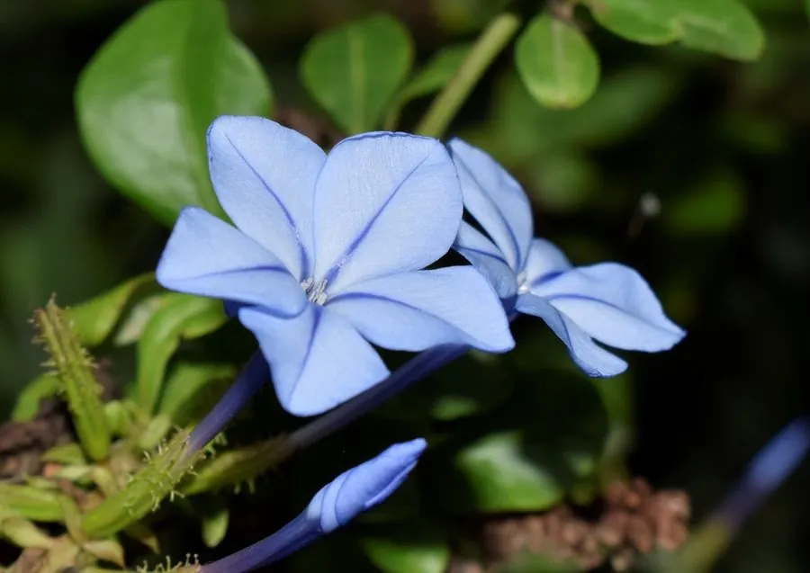

花卉与草本 · 植物界
蓝雪花 Plumbago auriculata

白花丹科白花丹属常绿半灌木，花冠天蓝色、五瓣平展，盛夏成片开放带来清凉感，是少有的真正蓝色花灌木。
- 分类
- 门被子植物门纲木兰纲目石竹目科白花丹科属白花丹属
- 栖息环境
- 原产南非，栽培于庭院与阳台，喜光喜湿、不耐寒
- 地理分布
- 原产南非；中国南方及长江流域栽培
- 保护级别
- 暂无评估；栽培观赏植物，不涉及保护等级
物种志
蓝雪花为白花丹科白花丹属常绿半灌木，高可达一到两米，枝条披散或攀援，嫩枝绿色。叶片互生，长椭圆形，全缘，表面深绿。花组成顶生的穗状或圆锥花序，花冠天蓝色，花冠筒细长，先端五裂平展，花期六月至九月；蒴果膜质，成熟时开裂，果期秋季。
蓝雪花原产南非，中国南方及长江流域有栽培。它喜光、喜温暖湿润，不耐寒，适宜疏松肥沃、排水良好的微酸性土壤。花色天蓝纯正，在盛夏酷暑中格外清凉，是花境、篱笆和阳台的优良观花植物，也可作小型藤本牵引。花后修剪可促发新枝、延长花期；北方需温室越冬。蓝雪花是白花丹科中少见的真正蓝色花种类。
形态与习性
- 株高1–2 m，枝条披散
- 花期6–9 月，花冠天蓝色
- 果期秋季，蒴果膜质
- 光照喜光，全日照开花繁
- 水分喜湿润，忌积水
- 土壤疏松肥沃的微酸性土
- 主要用途花境、篱笆与阳台观花
趣味知识
- 蓝雪花的花冠是纯正的天蓝色，在常见花卉中十分难得。
- 它的花冠筒细长，五枚花瓣平展，形似小风车。
- 蓝雪花原产南非，在当地常攀附于岩石和灌木上生长。